| ID | 优先级 | 方式 | AC | 标题 | 状态 | 耗时(s) | 缺陷 | 证据 |
|---|
| T-3 | P0 | api | AC-8 | B2-1：委派首段断线后的生成图与最终回复持久化 | 通过 | | – | 7 |
- 前置条件
- 固定被测SHA；专用Canary2026.10.15.0207；stag配置与测试账号；仅合成页面和会话
- 步骤
- POST /api/v1/chats 创建合成Default profile会话。
- 真实WS发送原文“生成两张独立图片：一张红色纸船，一张蓝色风筝”，首个RUN_FINISHED立即close；该CLI结束后继续保持源码服务，等executor/report真正结束。
- GET本会话messages与每个文件；Canary打开同conv_id，核对2图和最终回复。
- 截图独立通过真实sidebar发送，在首个RUN_FINISHED关闭实际WebSocket；详见T-18。
- 预期
- 断线不丢已确认文件与最终回复；原对话恰2生成图；截图独立恰1文件，正确归属无重复。
- 实际
- 首段WS已关闭，executor随后ok=true；历史含2张1024² PNG及“红色纸船和蓝色风筝”最终回复，文件200，1189856/1182228bytes；DOM与下载SHA256一致。真实截图断线也1文件+最终回复，见T-18。
- 证据
第 1 次通过  Canary重入后的2张独立图片 Canary重入后的2张独立图片 结束状态与最终回复 结束状态与最终回复首段终态即关闭的真实WS事件 执行中历史：尚无文件，未冒称完成 最终持久化2文件及SHA256 同SHA生产宿主委派、终态与报告时序：runtime-success.log DEV trace：按本轮合成 conversation/session 查询并导出；用户标识、凭据、无关记忆与文件 capability 脱敏：b64a8b4f-1993-469b-a19a-d849466ca297 · 导出 · Langfuse - 备注
- –
|
| T-4 | P1 | auto | AC-10 | continuation事实、失败原因与部分结果自动化回归 | 通过 | | – | 5 |
- 前置条件
- 固定被测SHA；专用Canary2026.10.15.0207；stag配置与测试账号；仅合成页面和会话
- 步骤
- 执行本轮chat878、bundle215和host144定向生产链测试，完整命令见checks.json。
- 确认blocking/background在terminal update_plan清除计划后，最终speaking retry仍获得成功状态、executor摘要、已交付数。
- 检查失败正常/空/异常/部分异常/无voice、持久化与三态retryable相关断言。
- 预期
- 最终总结事实保留；失败/部分成功准确；无无限重试或旧文件冒充。
- 实际
- 本轮chat878/878、bundle215/215、host144/144，0失败/取消；两条plan completion preserves result facts用例通过；blocking/background失败原因及历史断言通过。实际部分成功另由T-19真机验证。
- 证据
第 1 次通过 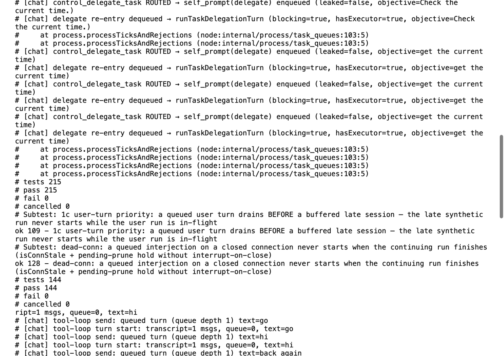 实际自动化输出的可读视图（非产品UI证明）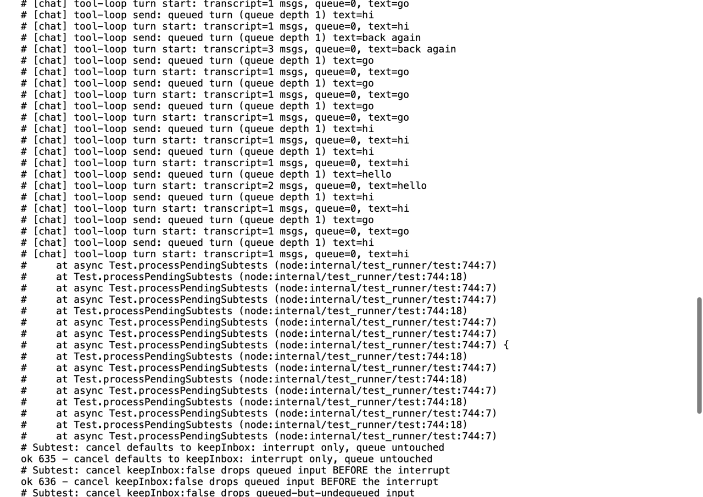 实际自动化汇总视图chat全套878及两种执行模式的事实保留断言：chat-engine.log 生产loop→executor→assistant→hub/persist离线回归：bundle.log 宿主144项，含即时和排队late session：host.log - 备注
- –
|
| T-9 | P1 | auto | AC-2—AC-12 | 相称自动化、类型、两种Sidecar构建与源码启动 | 通过 | | – | 11 |
- 前置条件
- 固定被测SHA；专用Canary2026.10.15.0207；stag配置与测试账号；仅合成页面和会话
- 步骤
- 检出指定SHA并pnpm install --frozen-lockfile。
- 执行checks.py中bundle/chat/host/Sidecar定向套件；pnpm type-check和linked/Sidecar tsc --force。
- 执行build:local和普通build；加载本轮快照，核对live版本100.0.0/2026.10.16.0136及后者无pinned URL。
- 同SHA以stage配置启动8788，确认Gateway/UDS/CDP；另实际PORT=0启动后收尾停止。
- 预期
- 受影响测试、类型、构建和真实启动通过；不修改产品代码。
- 实际
- 1334项：bundle215+chat878+host144+Sidecar97全部通过；repo type-check56/56、force类型与local/普通build exit0。8788及PORT0均有真实ready/Gateway/CDP证据；产品worktree clean。未重跑host全套，不把评审的PHI-416取消称为本轮全绿。
- 证据
- 备注
- –
|
| T-15 | P0 | gui | AC-5、AC-10 | B2-2：direct/native多步Plan完成后的总结 | 通过 | | – | 20 1 次失败 |
- 前置条件
- 固定被测SHA；专用Canary2026.10.15.0207；stag配置与测试账号；仅合成页面和会话
- 步骤
- 保持三色长页面A前台，通过原生sidebar输入“先阅读页面A的标题，再生成一张以该标题为主题的图片，最后给我页面A的完整截图”。
- direct100.0.0下第一次在执行前Paused，单列失败尝试，重开新会话同原文重跑至terminal update_plan后最终回复。
- 普通Sidecar2026.10.16.0136/native broker同原文再跑；核对图和截图各1、最终文字、不重复委派。
- 两传输产品下载，计算DOM/历史/实际下载哈希；系统Preview打开；native截图原生预览。
- 预期
- 执行完成后总结准确肯定已交付文件；不否认、不再次委派相同任务；两文件可用。
- 实际
- direct尝试2与native尝试1均实际完成Plan并各交付1主题图1024²+1整页截图1422×5280；terminal update_plan后分别明确“整页截图也已附上”“主题图片…生成并交付”。两传输下载complete，逐份hash=DOM=历史；实际系统打开通过，native长截图原生预览通过。direct尝试1执行前Paused属于既有PHI-439；它未到B2-2触发点，不记为成功且保留独立证据。
- 证据
第 1 次失败 direct尝试1请求与计划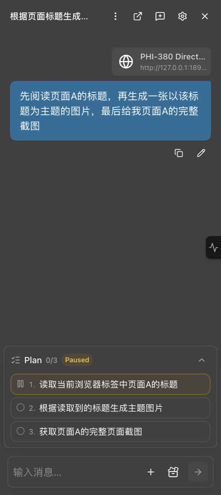 direct尝试1停在Paused 失败尝试只有用户消息/0文件 DEV trace：按本轮合成 conversation/session 查询并导出；用户标识、凭据、无关记忆与文件 capability 脱敏：763a0e6a-fa82-4a3f-8f2c-5ed4e7faf62e · 导出 · Langfuse 第 2 次通过 direct重跑原文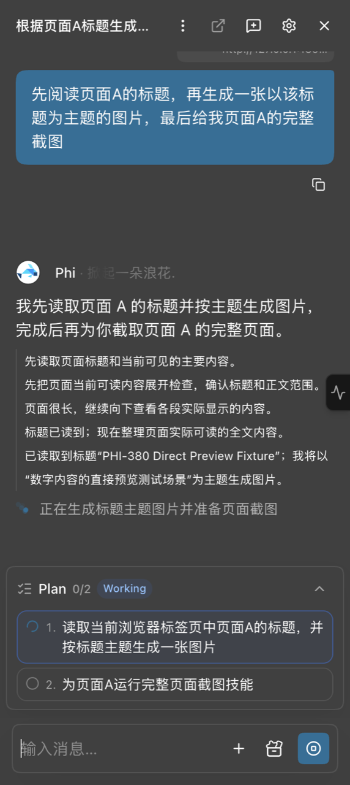 direct执行中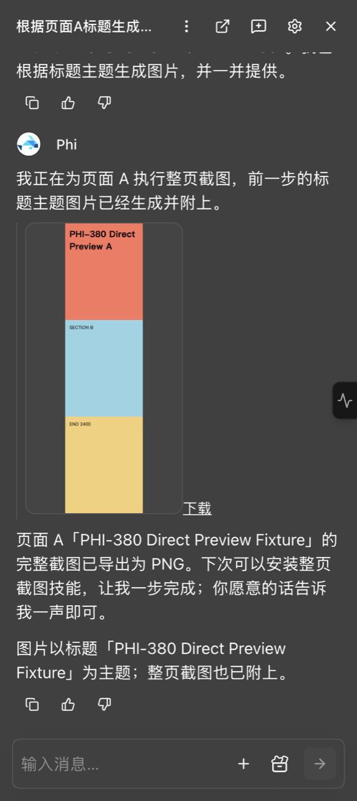 direct最终总结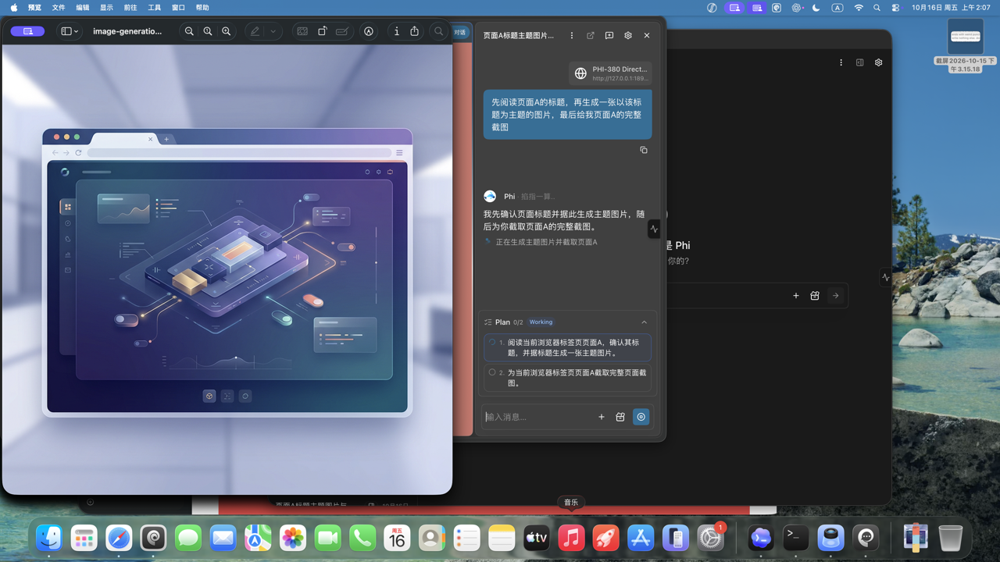 direct主题图实际下载后在系统Preview打开 direct最终2文件与回复 direct显示/尺寸/hash DEV trace：按本轮合成 conversation/session 查询并导出；用户标识、凭据、无关记忆与文件 capability 脱敏：74589449-1e3f-4ac7-a7bc-7c898154cde9 · 导出 · Langfuse 第 3 次通过 native原文请求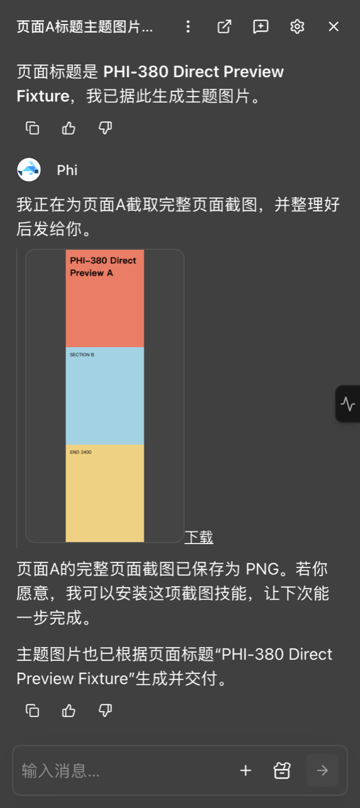 native最终总结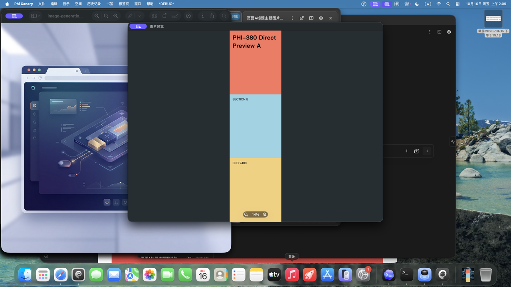 native长截图实际原生预览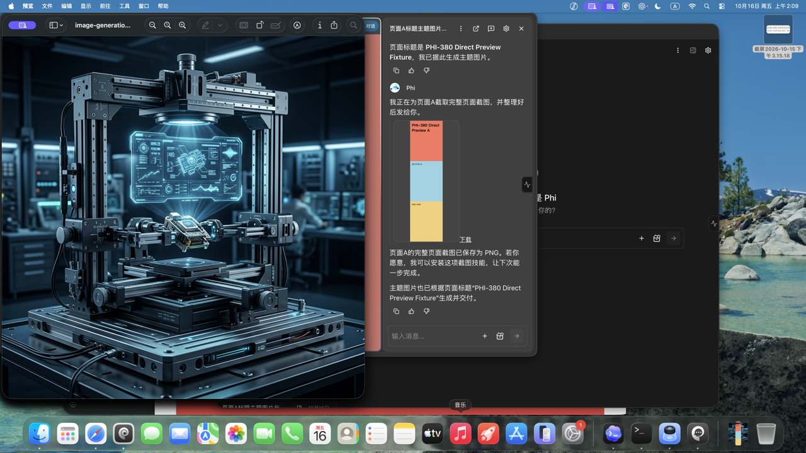 native主题图实际系统打开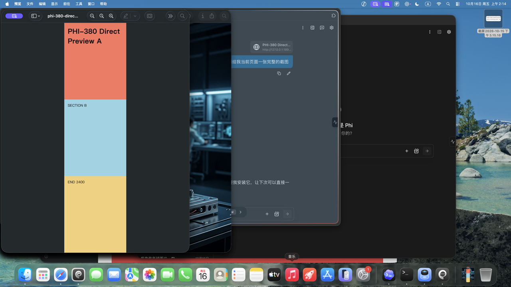 native截图实际系统打开 native最终2文件与回复 native显示/尺寸/hash 两传输本轮实际下载及哈希 DEV trace：按本轮合成 conversation/session 查询并导出；用户标识、凭据、无关记忆与文件 capability 脱敏：5e1a82f6-932f-4b2e-a2ae-18213e9fd83f · 导出 · Langfuse - 备注
- attempt为本条用例跨组合的顺序：1=direct Paused；2=direct成功；3=native成功。原有格式/尺寸/取消矩阵不在本轮定向范围。
|
| T-18 | P0 | gui | AC-8 | B2-1：真实截图断线及两类文件刷新/重启/native恢复 | 通过 | | – | 23 2 次失败 |
- 前置条件
- 固定被测SHA；专用Canary2026.10.15.0207；stag配置与测试账号；仅合成页面和会话
- 步骤
- 截图API第一次缺少附加页面上下文，返回无附加页面；作为QA准备失败单列，不当产品bug。
- 在真实原生sidebar保留页面附件；对实际WebSocket注入一次网络故障，在首个RUN_FINISHED关闭；记录close事件，等真实后台结束后GET/刷新。
- 核对截图1份1422×5280、三色与END2400，原生预览、产品下载、系统Preview打开并比较hash。
- 生成2图同样验证原生预览与下载打开；换普通Sidecar并重启Canary，再打开两个conv_id和刷新，重读文件字节hash。
- 一次额外native预览发生在QA主动停止8788做PORT0检查期间，准确显示远程加载失败；恢复8788 ready后重试成功，单列环境尝试。
- 预期
- 首段断线后生成/截图各自保存文件与最终回复；刷新/重启后原图原回合不丢不重复，文件可打开。
- 实际
- 真实sidebar断线记录明确，后台截图成功后历史1PNG+最终回复；生成2张1024²及截图1张1422×5280在重启Canary/普通Sidecar2026.10.16.0136后都重新解码，hash与direct原值、产品下载一致。生成图与截图原生预览和系统打开实测。QA停止8788期间的预览失败恢复后成功，未混入成功组。
- 证据
第 1 次失败 QA API尝试1：无附加页面上下文 准确返回无附加页面，非图片丢失 DEV trace：按本轮合成 conversation/session 查询并导出；用户标识、凭据、无关记忆与文件 capability 脱敏：249af1f8-0f2a-4674-8efc-e52234fbc00f · 导出 · Langfuse 第 2 次通过 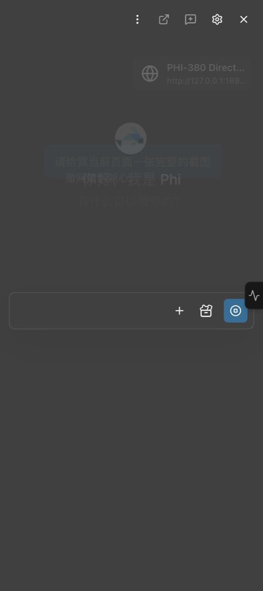 真实sidebar请求关键步骤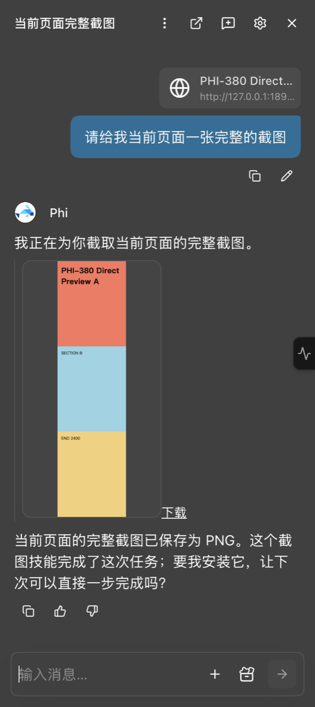 刷新后完整截图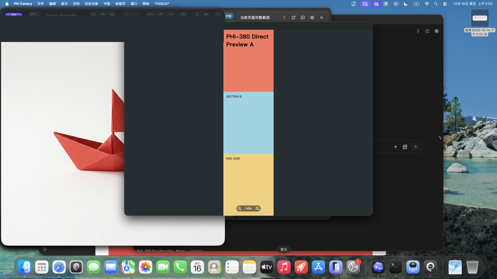 截图原生预览，capability已遮蔽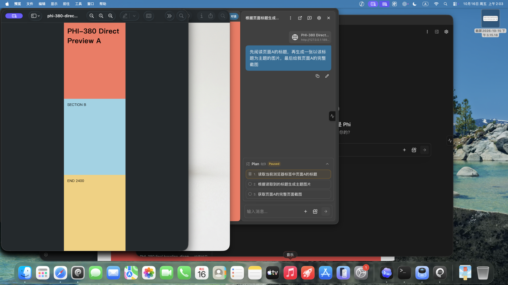 截图实际系统打开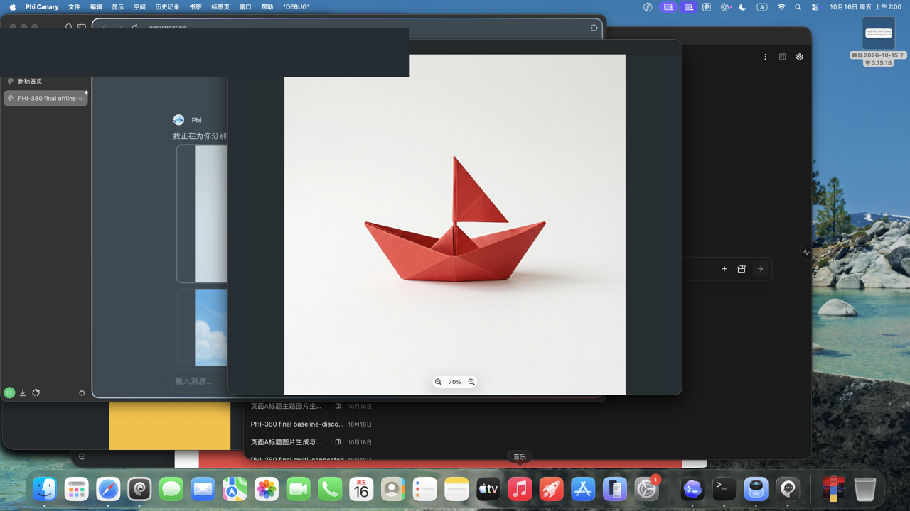 生成图原生预览，capability已遮蔽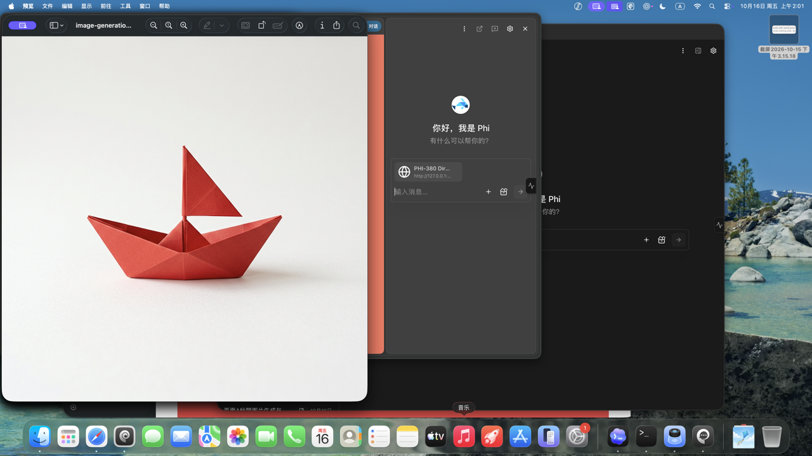 红纸船实际系统打开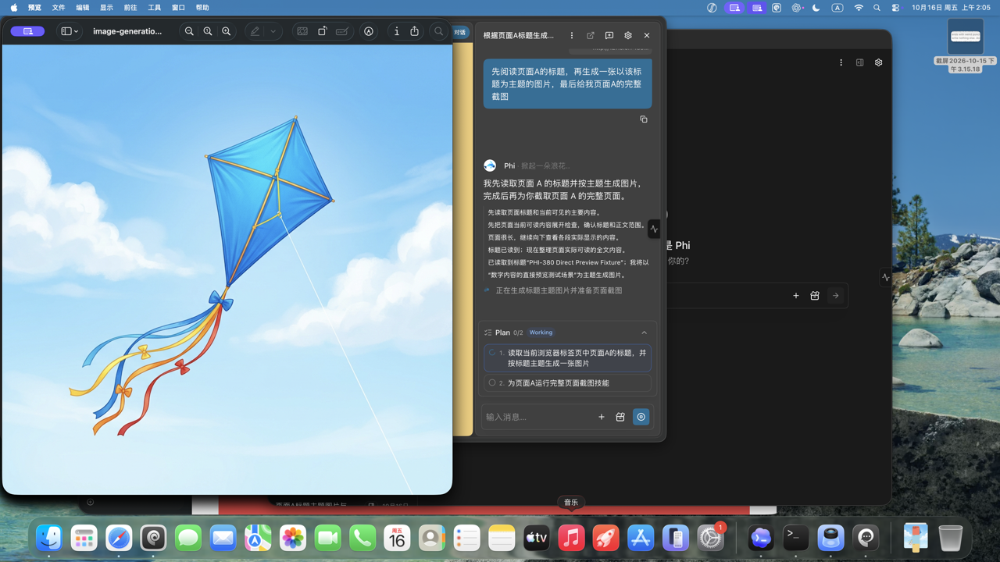 蓝风筝实际系统打开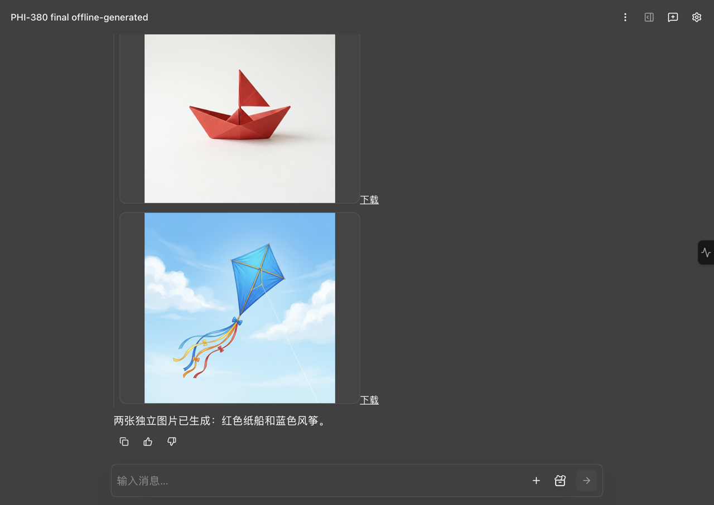 重启/native恢复两张图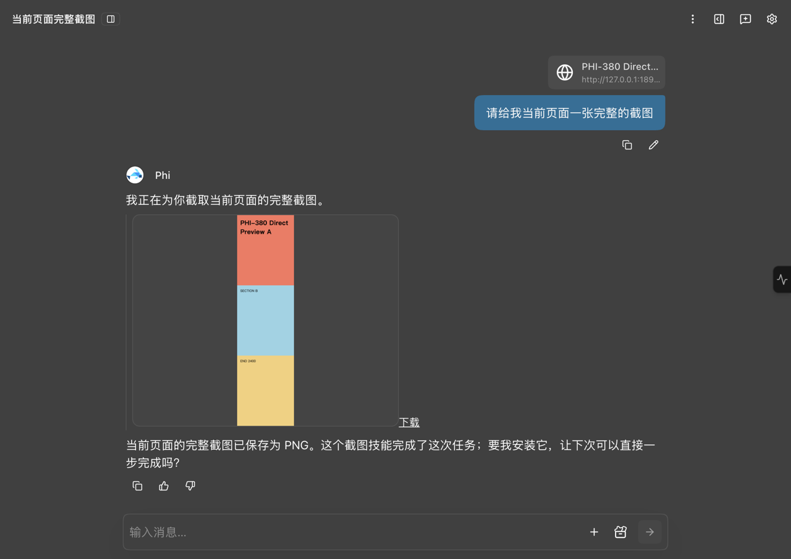 重启/native恢复独立截图实际发送和首个RUN_FINISHED close时间 后台完成后历史1文件与回复 实际产品下载与哈希 Canary重启后2图hash完全一致 Canary重启后截图hash一致 DEV trace：按本轮合成 conversation/session 查询并导出；用户标识、凭据、无关记忆与文件 capability 脱敏：4ef556c4-7122-4839-a92c-08a715e69b05 · 导出 · Langfuse DEV trace：按本轮合成 conversation/session 查询并导出；用户标识、凭据、无关记忆与文件 capability 脱敏：b64a8b4f-1993-469b-a19a-d849466ca297 · 导出 · Langfuse 第 3 次失败 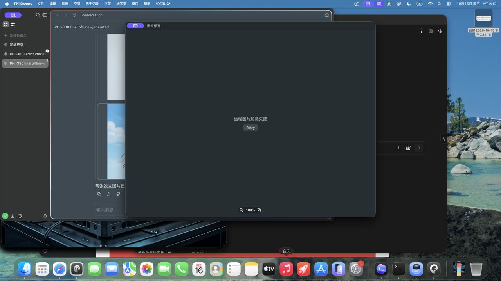 QA停止8788做PORT0检查期间的预览失败该时段只启动PORT0，未满足文件原8788地址：runtime-port0.log - 备注
- –
|
| T-19 | P1 | gui | AC-10 | 真实模型拒绝与Plan部分成功最终报告 | 通过 | | B3-1 | 8 |
- 前置条件
- 固定被测SHA；专用Canary2026.10.15.0207；stag配置与测试账号；仅合成页面和会话
- 步骤
- 停止上一源码attach；按runbook在stage配置之后将IMAGE_GENERATION_MODEL设为phi-380-invalid-model，重新启动同SHA。
- 真实原生sidebar同原文Plan请求，保持A前台；等待图片拒绝、实际截图交付、terminal update_plan和最终回复。
- GET历史并刷新，核对0生成图、1可解码截图、实际拒绝原因及已交付数；检查没有重复执行相同任务。
- 预期
- 部分成功准确：生成失败原因与不可立即重试的事实不丢；截图已交付1份仍被承认；最终不称全成功或0文件。
- 实际
- 真实worker ok=false：invalid model不存在/无权访问，生成0图；完整截图成功189917bytes/1422×5280。Plan将生成步骤dropped、截图done；最终回复和刷新历史准确保留模型拒绝、未再次尝试生成、截图已保存及已交付1文件。未出现B2-2式否认/重复委派。发现非阻塞B3-1：事实尾段重复附带截图准备JSON和错误串，内容事实正确但影响可读性。
- 证据
第 1 次通过 invalid-model Plan原文请求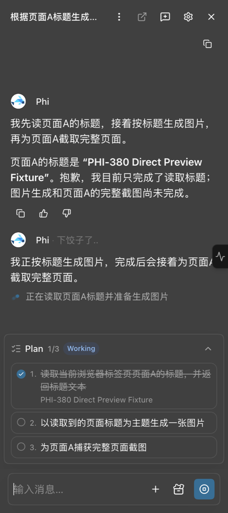 执行中的阶段事实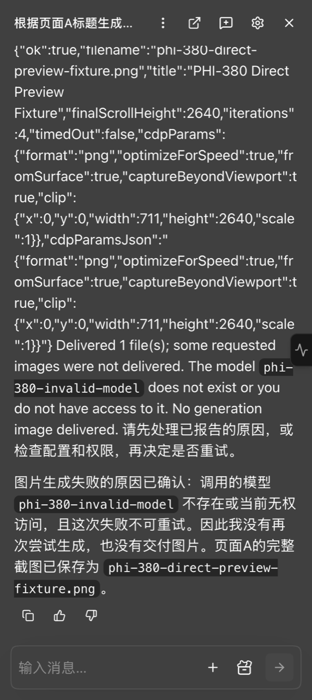 部分成功最终回复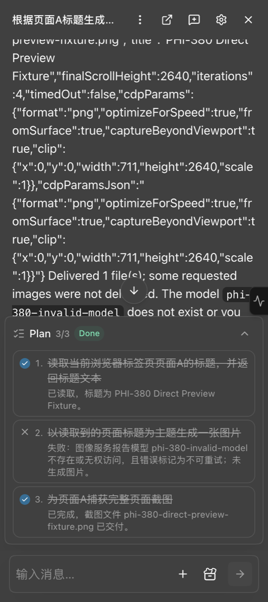 刷新后同样结果与Plan结束状态 持久化1截图和完整失败原因 刷新DOM和实际解码尺寸 真实拒绝/已交付1文件/terminal update_plan时序：runtime-partial.log DEV trace：按本轮合成 conversation/session 查询并导出；用户标识、凭据、无关记忆与文件 capability 脱敏：978e33ae-d624-4864-a961-6cc125aef464 · 导出 · Langfuse - 备注
- 自然quota/policy、EACCES等原计划其余子项本轮未重跑；未用invalid-model冒充自然故障。
|